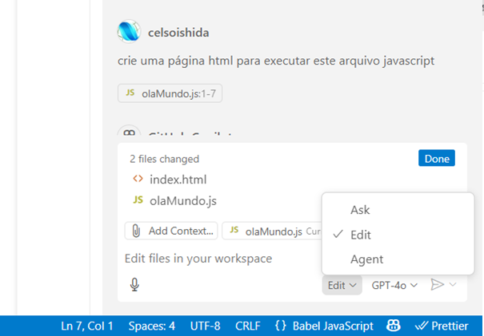

Visual Studio Code
Visual Studio Code é um editor de código-fonte gratuito, leve e poderoso, recomendado para desenvolvimento web e suporte a inteligência artificial.
Dicas
- Para abrir agente Copilot, pressione Ctrl + Shift + i. Note que é preciso estar selecionado Edit ou Agent no canto inferior direito.
- Quer que o Copilot faça um código? Digite um comentário e pressione Tab assim que a sugestão aparecer.
- Ou tecle CTRL+i e digite o prompt. Depois que ele sugerir o código, tecle CTRL+ENTER
- O copilot está sempre sugerindo complementos, por isso, ao aparecer a sugestão que aparece visualmente mais claro, pressione Tab se desejar adicionar o complemento.

| Atalho | Ação |
|---|---|
| Ctrl + P | Buscar rapidamente arquivos no projeto |
| Ctrl + Shift + P | Abrir a paleta de comandos |
| Ctrl + Shift + O | Ir direto para uma função/variável no arquivo |
| Alt + ↑ / ↓ | Mover linha para cima ou para baixo |
| Shift + Alt + ↓ / ↑ | Duplicar linha |
| Ctrl + B | Mostrar/ocultar barra lateral |
| Ctrl + Space | Sugestão de autocompletar (IntelliSense) |
| Ctrl + I | Abrir Chat Inline do Copilot |
| Ctrl + Alt + I | Abrir/fechar Painel de Chat do Copilot |
Instalação
- Acesse o site oficial do Visual Studio Code e clique em
Download
. - Escolha a versão compatível com seu sistema operacional (Windows, macOS ou Linux).
- Execute o instalador e siga as instruções na tela.
- Após a instalação, explore extensões como o GitHub Copilot para potencializar sua produtividade com IA.
Veja o vídeo com as dicas de instalação do VS Code e de outras ferramentas a programção web (video: instalProgWeb.pptx)